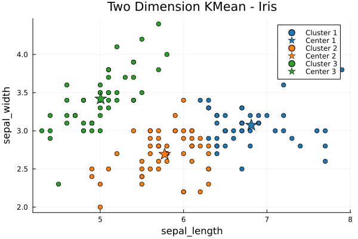
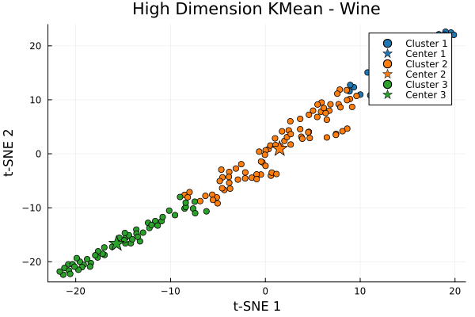

Two Dimensions (Sepal Length and Width) Example of Iris Data
This is a simple example with real world data on how to use KMeans Clustering and visualize the clusters.
The process consists of four main steps:
- Data Loading - Iris Data
- Data Preprocessing - Extract required data and convert to required data format
- KMeans Clustering Execution - KMean and KMean++
- Results Visualization - 2D Plot
using KMeansClustering
using MLJ
using DataFrames
using Plots
# Load Iris data
models()
data = load_iris()
iris = DataFrame(data)
y_iris, X_iris = unpack(iris, ==(:target); rng=123);
# Extract sepal_length and sepal_width features from Iris dataset
# Convert selected features to a vector for KMeans clustering
X_iris = Matrix(X_iris[:, 1:2])'
X_iris_vec = [Vector{Float64}(col) for col in eachcol(X_iris)]
# Execute KMeans clustering
k = 3
max_iter = 100
tol = 0.0001
Initializer = KMeansPPInit{Vector{Float64}}()
clusters = KMeans(X_iris_vec, k; init = Initializer, max_iter = max_iter, tol = tol)3-element Vector{Pair{Vector{Float64}, AbstractVector{Vector{Float64}}}}:
[5.8, 2.7000000000000006] => [[5.7, 2.8], [5.6, 2.5], [6.1, 2.9], [6.3, 2.5], [5.0, 2.3], [5.8, 2.7], [5.8, 2.7], [5.6, 3.0], [6.1, 3.0], [5.7, 2.8] … [6.1, 3.0], [5.9, 3.2], [5.8, 2.7], [5.5, 2.5], [6.2, 2.9], [5.7, 2.6], [6.0, 2.9], [6.0, 3.0], [6.1, 2.8], [6.3, 2.5]]
[6.823913043478262, 3.0782608695652165] => [[6.7, 3.3], [7.2, 3.0], [6.5, 3.0], [7.2, 3.2], [6.4, 3.2], [7.4, 2.8], [6.9, 3.2], [6.2, 3.4], [7.1, 3.0], [6.6, 3.0] … [7.7, 3.8], [6.3, 3.3], [6.3, 3.4], [7.2, 3.6], [6.6, 2.9], [6.4, 2.7], [6.8, 3.2], [6.9, 3.1], [6.7, 2.5], [7.6, 3.0]]
[5.003921568627452, 3.400000000000001] => [[4.4, 2.9], [4.4, 3.0], [5.4, 3.9], [4.9, 2.5], [5.0, 3.3], [4.6, 3.1], [4.6, 3.2], [4.8, 3.4], [4.9, 3.1], [5.7, 4.4] … [4.8, 3.4], [4.3, 3.0], [4.8, 3.0], [5.5, 3.5], [5.1, 3.4], [5.5, 4.2], [5.4, 3.4], [5.0, 3.5], [5.1, 3.8], [5.0, 3.6]]Visualization
# Plot the result
p = plot(title="Two Dimension KMean - Iris", xlabel="sepal_length", ylabel="sepal_width", legend=:topright)
color_palette = palette(:tab10)
for (i, (centers, members)) in enumerate(clusters)
mem_x = [members[i][1] for i in 1:length(members)]
mem_y = [members[i][2] for i in 1:length(members)]
# Plot cluster points
scatter!(p, mem_x, mem_y, label="Cluster $i", color=color_palette[i])
# Plot cluster center
scatter!(p, [centers[1]], [centers[2]], color=color_palette[i], marker=:star, markersize=10, label="Center $i")
end
High Dimensions Example of Wine Data
This example illustrates the application of KMeans Clustering to high-dimensional, real-world data, demonstrating how the algorithm partitions and visualizes complex datasets into distinct clusters.
The process consists of four main steps:
- Data Loading - Wine Data
- Data Preprocessing - Normalize and convert to required data format
- KMeans Clustering Execution - KMean and KMean++
- Results Visualization - t-SNE to 2D Plot
using KMeansClustering
using TSne
using HTTP
using CSV
using DataFrames
using MLJ
using Plots
# Load wine data
# There are 13 features: Alcohol,Malic.acid,Ash,Acl,Mg,Phenols,Flavanoids,Nonflavanoid.phenols,Proanth,Color.int,Hue,OD,Proline
data_path = ".\\wine.csv"
url = "https://gist.githubusercontent.com/tijptjik/9408623/raw/b237fa5848349a14a14e5d4107dc7897c21951f5/wine.csv"
HTTP.download(url, data_path)
wine_df = CSV.read(data_path, DataFrame)
y_wine, X_wine = unpack(wine_df, ==(:Wine); rng=123);
X_wine = Matrix(X_wine)'
# Normalize
X_normalized = (X_wine .- mean(X_wine, dims=1)) ./ std(X_wine, dims=1)
# Convert to vector
X_normalized_vec = [Vector{Float64}(col) for col in eachcol(X_normalized)]
# Execute KMeans clustering
k = 3
max_iter = 100
tol = 0.0001
Initializer = KMeansPPInit{Vector{Float64}}()
clusters = KMeans(X_normalized_vec, k; init = Initializer, max_iter = max_iter, tol = tol)3-element Vector{Pair{Vector{Float64}, AbstractVector{Vector{Float64}}}}:
[-0.27109583532729575, -0.33225351291866656, -0.33420882836930776, -0.2259551957813942, 0.23306442228167706, -0.33655927473096703, -0.3397410644544759, -0.3458249962766991, -0.33982631261737006, -0.31601695975084854, -0.34310303458599717, -0.3348188840904926, 3.286339476621836] => [[-0.26190259862452253, -0.3418544140343778, -0.3365004978238964, -0.21029084635548198, 0.20660076256733487, -0.3351441723839078, -0.3359294134281117, -0.34827911348695545, -0.3427824261775279, -0.3167980861693249, -0.34221134178174323, -0.32536435210609516, 3.2904564998046104], [-0.27186393997677927, -0.31192639222427365, -0.3263348180325831, -0.2275341839184616, 0.12891119322089922, -0.3292466253387919, -0.33481922207998477, -0.3349196292284747, -0.33020049324944656, -0.29832122360388397, -0.3349698328027197, -0.33055191826916136, 3.3017770855036606], [-0.2839628219355058, -0.33211608483368593, -0.3269943286890613, -0.23165086815066466, 0.20172849793295639, -0.32957709460814555, -0.3293582161404265, -0.3390326444136063, -0.3326851688497553, -0.3254184037214845, -0.33614344863971557, -0.3270818800761489, 3.292292462125244], [-0.2807533647023793, -0.3198749272600775, -0.32866531172799185, -0.2514665887275952, 0.18370095918895885, -0.3315809342990328, -0.33549744223028183, -0.3366288778548648, -0.3326253364140326, -0.2941130084234175, -0.33593260977819833, -0.33171148456340777, 3.2951489267923204], [-0.2795857723243181, -0.33391591944199633, -0.33247988031113257, -0.23028176216466287, 0.2663484372590484, -0.33948057107409335, -0.3378051920880856, -0.3463615919094821, -0.34366901853911264, -0.32721440349796554, -0.3425919891909648, -0.33499294879014413, 3.28203061207291], [-0.27443245176648895, -0.32562445465013756, -0.32756975075971617, -0.24668638620355138, 0.16029003672145514, -0.32485657460688283, -0.3251637266241847, -0.3349413991749616, -0.32910551084622564, -0.3193790302983324, -0.3297710068837131, -0.32111955839637646, 3.2983598134891157], [-0.27912916952752737, -0.33178196220816486, -0.3316656024453347, -0.22938537091764336, 0.21278172783688137, -0.3288729681374114, -0.32951294683297716, -0.34388337754249926, -0.33509821544882384, -0.326836672287884, -0.34109074323457594, -0.32602215394807305, 3.2904974546940333], [-0.26877564459480957, -0.3381684484064685, -0.33246895478264893, -0.21577622965991, 0.17496225073596808, -0.3327039854475487, -0.3415176353812903, -0.3449255800223371, -0.334525473100522, -0.2789407208517249, -0.3446317916912124, -0.3375221140779941, 3.2949943272804982], [-0.27827388699096234, -0.329280705756117, -0.3350353212065448, -0.2283133619440672, 0.23205587409014952, -0.33974364293871284, -0.34382418843992524, -0.3463876080496612, -0.3409991954006244, -0.2927650549888576, -0.3441903912413161, -0.34047604854149455, 3.2872335314081336], [-0.2694990070443952, -0.3308032162027952, -0.33146956630234303, -0.22061314065029564, 0.23371647267776752, -0.33849653098848376, -0.3447965682932995, -0.3446148364479683, -0.34328213624887266, -0.3199598827646988, -0.3431609816853185, -0.33383208029164896, 3.2868114742423518] … [-0.285717321648141, -0.34046114816114315, -0.33582675014946034, -0.2737934017639157, 0.31129934721102737, -0.33606812504590217, -0.33630949994234405, -0.3435507468355983, -0.33191647682710307, -0.32882687815264794, -0.34012322330612454, -0.33408885089507934, 3.275383075516432], [-0.2773212134250065, -0.3321979320865508, -0.3249773112100318, -0.2324463918294551, 0.16335060436491944, -0.3247633668877646, -0.32380061743756205, -0.3378674566266324, -0.32610051890193475, -0.3252447416128659, -0.3342838892286563, -0.32198209069829065, 3.2976349255798314], [-0.2621221015742262, -0.3242162216069949, -0.3329972082782956, -0.22442658022099998, 0.2052145533390664, -0.3365723242801823, -0.34372255628395565, -0.3430953429502913, -0.3412137029492983, -0.31098202026667754, -0.34165275228286335, -0.3353178976128536, 3.2911041549675724], [-0.2778492426382592, -0.33569586908664717, -0.3326709047108264, -0.26882088742427107, 0.24309616079155144, -0.3293201749406865, -0.3285290304116257, -0.34216463905955624, -0.3335085871533614, -0.31698762787003254, -0.3382089164142521, -0.32601598308402074, 3.286675702001987], [-0.27081920844339447, -0.336065177276961, -0.34111693713212266, -0.22243615630945204, 0.3254307575601905, -0.348730152688493, -0.35413767027993365, -0.35477803420523585, -0.3524300331457945, -0.318490745104779, -0.3529280939765851, -0.34460336294765676, 3.271104813950217], [-0.2741826316557667, -0.33503524731795786, -0.33719095738696264, -0.2054462763126438, 0.26880993886840104, -0.3389771171584237, -0.34957089235467564, -0.3500020343684766, -0.3482774663132728, -0.32296327093153127, -0.3477847325832146, -0.3400241763347975, 3.2806448638493224], [-0.2773965890345096, -0.33155199094656695, -0.32880994528013363, -0.26533158810220314, 0.1953320838585883, -0.324971081347127, -0.32433127069162593, -0.3378129952182562, -0.32867284299681193, -0.3113522545371751, -0.3350252487907157, -0.32391996384166094, 3.2938436869281973], [-0.24588381053438302, -0.3233171315543636, -0.3479311170822081, -0.1922761267513196, 0.3332894005336162, -0.35888039890064427, -0.36448643119168356, -0.3639608656643986, -0.36150822653706893, -0.32454345111802846, -0.36238416908254384, -0.35581459999148213, 3.2676969278745074], [-0.2709401779503803, -0.3408139333557951, -0.3351842942946953, -0.21210493050790616, 0.19080061013943053, -0.3346323688965483, -0.3428560573289391, -0.347161075434486, -0.3351842942946953, -0.27833597828555057, -0.3469403052752272, -0.33926854224098335, 3.292621347725776], [-0.28001630932367894, -0.3326498105874601, -0.3312660190049382, -0.24166551403664208, 0.23771942705131852, -0.3316119669005687, -0.33215559930798805, -0.3435224587358469, -0.33645523743939554, -0.32409995545259246, -0.34031008541927804, -0.3309694922372549, 3.2870030213943253]]
[-0.26877741980894815, -0.3604779947786958, -0.36002415198995036, -0.19301965656821538, 0.4901498659702203, -0.3596834412200004, -0.3610018182802033, -0.377584322563418, -0.36631785480884377, -0.348943449708707, -0.37160897412177313, -0.35585093359332626, 3.233140151471861] => [[-0.2647413543139112, -0.36192514200980036, -0.3530195102191629, -0.20741675356446765, 0.38052786950674816, -0.34143354264687714, -0.344892040429649, -0.37005261179931426, -0.35552692111167244, -0.33321961041279397, -0.36114698000867673, -0.3468806766547428, 3.25972727366432], [-0.25319921954897356, -0.39603717663914767, -0.3821143432765675, -0.16295863293965782, 0.7007726960352215, -0.3766999080800086, -0.37876255005965004, -0.4040299143102585, -0.38946250532904036, -0.37566858709018786, -0.3901070809476784, -0.367675849419077, 3.175943071605025], [-0.28078442228733846, -0.35571283398558723, -0.3593221023718227, -0.20498978617639319, 0.5096453542982337, -0.3681287172342373, -0.36690156598291723, -0.37664659062575306, -0.3692114977501079, -0.31615525247244625, -0.3739757320199387, -0.3688505709114844, 3.2310337175197925], [-0.26670185023491855, -0.3607209185969789, -0.35058712679747533, -0.22383430238463786, 0.42762374186915897, -0.35090883447365007, -0.35299993436878574, -0.3661899490919491, -0.3568604264828823, -0.34753090387381563, -0.35871024562088694, -0.3431878502454569, 3.2506086003022783], [-0.26370685729258275, -0.35877444858708535, -0.3586785176170606, -0.17804050106050323, 0.4359177070977374, -0.35455348590599745, -0.3540738310558738, -0.37594609222151115, -0.3665448571590881, -0.35301859038560185, -0.3712454746902996, -0.3480301799443161, 3.2466951288221826], [-0.2724448806531814, -0.3727606883266278, -0.3697397553852675, -0.20598435594325532, 0.627376455466476, -0.36203116787972744, -0.36994809558812, -0.39171964678619914, -0.3794275748179056, -0.35963525554692455, -0.38140680674500377, -0.3626561884882848, 3.2003779606940217], [-0.2715036527334364, -0.3607121795257781, -0.34599737098271144, -0.19132466754706748, 0.36884133949012954, -0.3461645847161554, -0.35009410745208797, -0.3633875992608811, -0.35485969885524027, -0.3411481727128372, -0.3577023323237872, -0.34758590145042884, 3.2616389280702816], [-0.27884922270489343, -0.3737570799223167, -0.36656067683268156, -0.1739510647277414, 0.5922542054039984, -0.3712171729495043, -0.3790062209994623, -0.3876419047070245, -0.3766356411581707, -0.3297320257269018, -0.38467867990541, -0.3785829031706603, 3.208358387400768], [-0.2667657875851053, -0.3574438939631299, -0.3521382600793093, -0.2333242164385997, 0.4355072064915112, -0.3521382600793093, -0.35704195200223443, -0.3641161305139952, -0.36339263498438334, -0.3221533897965051, -0.36049865286593574, -0.3555949609430106, 3.2491009327600064], [-0.2707758497266684, -0.3533887349595553, -0.3530508499483779, -0.23411532601391494, 0.45010182162042434, -0.3556694587850031, -0.3560073437961806, -0.36639730788988717, -0.3595551364135438, -0.33717025442303766, -0.35887936639118895, -0.35119248238690187, 3.2461002891138357] … [-0.2700601304507708, -0.37830477303358717, -0.36739952919128854, -0.2010945605962339, 0.6571885195846796, -0.37386189591265073, -0.3752755386329487, -0.3884022210357156, -0.3825457011944811, -0.3631586010303946, -0.37830477303358717, -0.3704287635919271, 3.191647968118907], [-0.2764050330162725, -0.35523370542889227, -0.37200576338902414, -0.13749292944059222, 0.6073837623182049, -0.3772346991060064, -0.3779253132573059, -0.3946973712174378, -0.3820689981651032, -0.37841860907966274, -0.38986307215834093, -0.3681580559746409, 3.2021197879150742], [-0.2906569630756537, -0.3466725949810452, -0.34308851946181473, -0.2346413311702622, 0.4156949525610632, -0.34967859380362554, -0.3532048616531909, -0.3581185135747165, -0.3499098244822855, -0.34447590353377494, -0.35343609233185097, -0.3458632876057351, 3.254051533112892], [-0.2608708984232925, -0.372996008550023, -0.3651781109632051, -0.1675704627490313, 0.4959221613953837, -0.36054909265522084, -0.35633154264127964, -0.38472285493024994, -0.37052719878576473, -0.3482050438339294, -0.3816368427249271, -0.35952042192011324, 3.232186316781653], [-0.2727899234913992, -0.38475665036868856, -0.3787491849118127, -0.16838431693052255, 0.7171989530054848, -0.3807171477338927, -0.37978495481817065, -0.39791092817943385, -0.38475665036868856, -0.38009568579007796, -0.390453384853657, -0.37077375663285683, 3.171973631073715], [-0.27439208188288444, -0.34353826005143095, -0.35504957170576423, -0.19373459206000457, 0.4170696998025806, -0.35168231727626537, -0.353874948067567, -0.37047629548742184, -0.35857344262035606, -0.353718331582474, -0.364524869053889, -0.3493330699998708, 3.2518280799853474], [-0.2562976519328489, -0.36823266892702816, -0.3711170202073539, -0.16222342555914823, 0.5810517120632511, -0.3669014298745702, -0.3700076543303055, -0.39230590845897756, -0.3816559960393133, -0.37300294219833613, -0.38520596684586805, -0.36434988835735893, 3.2102488406678575], [-0.2554893050969423, -0.3649749795486014, -0.35469130486326333, -0.15673056717050646, 0.38404887748951017, -0.3522090385599059, -0.35300690987169936, -0.3764997873856181, -0.36178349430142753, -0.3483969867368927, -0.36630476506825715, -0.35034733883238783, 3.2563855999459914], [-0.25935758408182125, -0.3851155663442632, -0.3776368208300283, -0.1813485154871866, 0.6585721345730386, -0.37280440065159964, -0.3764862445970691, -0.3954707524408961, -0.3760260141038854, -0.36889244145953826, -0.3900630441459878, -0.3652105975140688, 3.1898398470833063], [-0.2594341084870672, -0.372183026181064, -0.37538157703763125, -0.1499979756088009, 0.6267929467003965, -0.3821213806282552, -0.3802936372816453, -0.3937732444628932, -0.3850914635664962, -0.3704695167936172, -0.39148856527963083, -0.3636154792438302, 3.197057027870535]]
[-0.273650353026377, -0.31361347806078244, -0.31207341532894833, -0.2571955561915704, 0.030008892237339695, -0.3113708257257411, -0.3114886713727681, -0.3193655849958877, -0.31440809447237444, -0.3028833197859306, -0.3168432594729695, -0.3100038052378351, 3.3128874714338448] => [[-0.2723986074717175, -0.31400133334665864, -0.31224594406923495, -0.2622524574482087, 0.03405725258090762, -0.3113682494305231, -0.3104203392207143, -0.31958347124886594, -0.3145981657009827, -0.3071904229502548, -0.3166344172627941, -0.3064882672392853, 3.313124422808332], [-0.2754889398639714, -0.3066305148028455, -0.30490320879739347, -0.27298559782708437, -0.030662088656424214, -0.3028504683271461, -0.3025500672827197, -0.310185260495225, -0.3061048129750992, -0.29413883803877944, -0.30840788764903526, -0.3039018719826387, 3.3188095566983624], [-0.27809406539599185, -0.32079421924723067, -0.31833861934524244, -0.2734216044713755, 0.10651426925290579, -0.3170767138400541, -0.3161899694310028, -0.3256713134970127, -0.31881609710396236, -0.30739073644887854, -0.32307929137824737, -0.3132568917702947, 3.3056152526763873], [-0.27217916865359776, -0.30749165327291744, -0.30490855413983464, -0.26394364082929855, -0.03024914278922261, -0.30420959790382407, -0.3039360932897329, -0.3118373376968096, -0.30846411412301916, -0.2982836645985165, -0.3100747524060002, -0.3030851900458939, 3.3186629097486673], [-0.27868168841319213, -0.31706400008687236, -0.3146955226970341, -0.2561649307618531, 0.053683823662192695, -0.31307327790947365, -0.3136572860329954, -0.3220280691368073, -0.31472796759278526, -0.3023989072073259, -0.319497367268213, -0.3128461636392152, 3.3111513570835744], [-0.2711789796620904, -0.30478495714987386, -0.31082490294705123, -0.2522514751000055, -0.0022258118680116867, -0.30966607613712765, -0.30885840896657485, -0.31732135627541064, -0.3130723246390242, -0.30323985473664244, -0.31507393458343763, -0.3077346981205884, 3.3162327801858384], [-0.26719460982895676, -0.31305495411028084, -0.31121219577297216, -0.27008043892323264, 0.01850247050435647, -0.3090217471833411, -0.30839590472916073, -0.3177487725166332, -0.3118728072523847, -0.3006771811276035, -0.31500201952328627, -0.3088479020571799, 3.3146060625206752], [-0.27310774607448485, -0.31452983050822325, -0.31322681791842016, -0.256991537726921, 0.031728620329434486, -0.31202667474360163, -0.31144374805868974, -0.3203590973573421, -0.31329539752840985, -0.3001966920203899, -0.31778736198273083, -0.31202667474360163, 3.31326295833338], [-0.2759065208962423, -0.31110951919363994, -0.3095526298340499, -0.2659308964810911, -0.004719459483201779, -0.30779392148340184, -0.3058910567105695, -0.31517473029923626, -0.3101004242383501, -0.2904374882524162, -0.31286822754428795, -0.3071596332257911, 3.316644507642278], [-0.27570591625033963, -0.322606870418388, -0.32035922085761886, -0.26791406443967347, 0.11306253611068719, -0.3169877465164652, -0.3177369630367216, -0.32800122936423376, -0.321370663159965, -0.3050752038443891, -0.32545389319536216, -0.3165756774303242, 3.304724912402794] … [-0.27375782901808055, -0.31988531020951627, -0.31751371734620343, -0.2460101925173197, 0.06822586187163848, -0.3163674474622688, -0.3152607041260561, -0.3260119251064079, -0.3196876774709069, -0.30688107600901726, -0.3229288543841011, -0.31332390328768395, 3.3094027750659243], [-0.27499061718419493, -0.3092133399195669, -0.31459744575797355, -0.2592084569453656, 0.0507141353779145, -0.31321776863688183, -0.3138907818666826, -0.32179868731684236, -0.3186018744752884, -0.305175260540762, -0.31988059961191, -0.3116025368853599, 3.3114632337629133], [-0.27088717182701594, -0.3067375435819271, -0.30435508216783497, -0.2632859854106266, -0.04149017281299576, -0.30469543379841957, -0.3040430931731324, -0.3101977851595372, -0.30648227985898874, -0.29675389575144556, -0.30761678529427067, -0.30293695037373247, 3.3194821792099267], [-0.26393955133878055, -0.3265763403273599, -0.3209244626232741, -0.19681622025520534, 0.07354164105363932, -0.32150713042781903, -0.32506140403554307, -0.33187861734871865, -0.3262850064250874, -0.32418740232872567, -0.3280912766191767, -0.3156221856019153, 3.307347956277966], [-0.26697643493451106, -0.30809682602130944, -0.3060123822334994, -0.27755656628172876, -0.02616001247918265, -0.30377002603752196, -0.30190665962114627, -0.3122025486336626, -0.30468591800489303, -0.2965060552618202, -0.3096127851397168, -0.30493857785796086, 3.3184247925069523], [-0.2710261724789139, -0.30408026005866423, -0.30221031167644874, -0.26483884327305385, -0.0640943845940378, -0.301687826099065, -0.3012478382444261, -0.3080401507504147, -0.30386026613134476, -0.29343805382458493, -0.30567521603173037, -0.30086284887161696, 3.3210621720343014], [-0.2750554298396961, -0.32311319381182635, -0.3181587851549057, -0.26588977382439294, 0.12426990790810756, -0.3191496668862899, -0.3188193729758284, -0.3284804698568237, -0.32426922249844115, -0.31089231912475546, -0.3253839644462483, -0.31840650558775174, 3.3033487960988523], [-0.28111453789933816, -0.3170772031557075, -0.3136367846479436, -0.26423590351082143, 0.06657356838955038, -0.312901652488165, -0.313519163502379, -0.3201059476539953, -0.31760649831074805, -0.30569735732233466, -0.3179005511746595, -0.3127546260562093, 3.3099766573327516], [-0.27585029248667703, -0.3105845804092813, -0.3075605211678503, -0.2674281461881123, -0.009393932409937616, -0.3050169199367401, -0.3042538395674071, -0.31408909766103305, -0.3088605840193066, -0.295407759730324, -0.3121107411479474, -0.306514818439505, 3.3170712331641212], [-0.27158450608491236, -0.30840672079105175, -0.3128772584430483, -0.2660560549427487, 0.027429622974581232, -0.3095670130060738, -0.30984002293902013, -0.31973663300832544, -0.313184394617613, -0.30393618313905524, -0.3171089124037168, -0.3089186144153262, 3.3137866908163107]]Visualization
We use t-SNE to do dimension reduction for visulization.
t-SNE (t-Distributed Stochastic Neighbor Embedding) is a powerful dimensionality reduction and data visualization technique used in machine learning and data science.
# Extract and combine centers and clusters for the purpose of using t-SNE
combined_centers_clusters = Matrix{Float64}(undef, 0, length(first(first(clusters)[2])))
centers_index = Int[]
global count_index = 1
for (i, (centers, members)) in enumerate(clusters)
global combined_centers_clusters = vcat(combined_centers_clusters, centers')
push!(centers_index, count_index)
for member in members
global combined_centers_clusters = vcat(combined_centers_clusters, member')
global count_index += 1
end
global count_index += 1
end
# Execute t-SNE
tsne_result = tsne(combined_centers_clusters, 2, 50, 1000, 20.0);
# Convert to vector
tsne_result_vec = [Vector{Float64}(col) for col in eachcol(tsne_result')]
# Plot the result
p = plot(title="High Dimension KMean - Wine", xlabel="t-SNE 1", ylabel="t-SNE 2", legend=:topright)
color_palette = palette(:tab10)
for i in 1:k
tsne_result_members = []
for j in (centers_index[i]+1):(i != k ? (centers_index[i+1]-1) : length(tsne_result_vec) )
push!(tsne_result_members, tsne_result_vec[j])
end
# Plot cluster points
mem_x = [tsne_result_members[m][1] for m in 1:length(tsne_result_members)]
mem_y = [tsne_result_members[m][2] for m in 1:length(tsne_result_members)]
scatter!(p, mem_x, mem_y, color=color_palette[i] , label="Cluster $i")
# Plot cluster center
scatter!(p, ([tsne_result_vec[centers_index[i]]][1][1], [tsne_result_vec[centers_index[i]]][1][2]), color=color_palette[i], marker=:star, markersize=10, label="Center $i")
end
Computing point perplexities 1%|▎ | ETA: 0:00:17
Computing point perplexities 100%|███████████████████████| Time: 0:00:01
Computing t-SNE 0%|▏ | ETA: 0:00:58
KL_divergence: 2.3963 (warmup)
Computing t-SNE 100%|████████████████████████████████████| Time: 0:00:00
KL_divergence: 0.2105